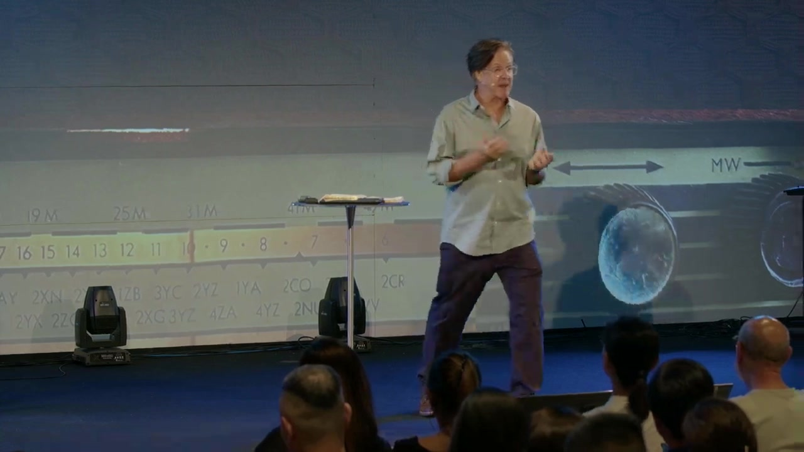
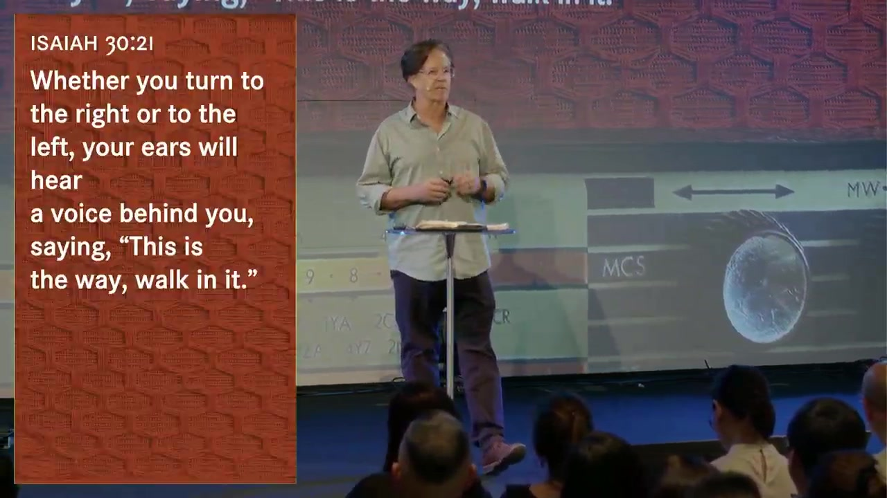
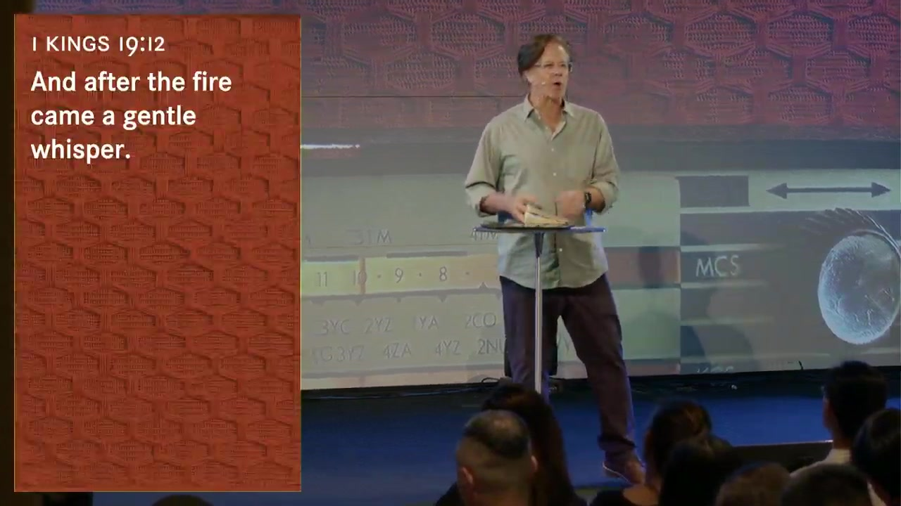
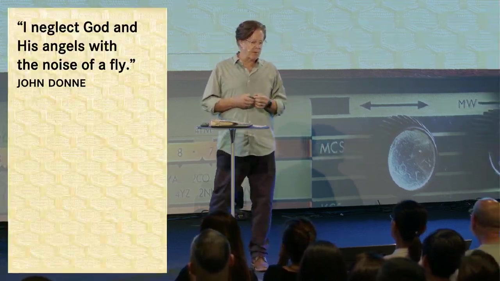
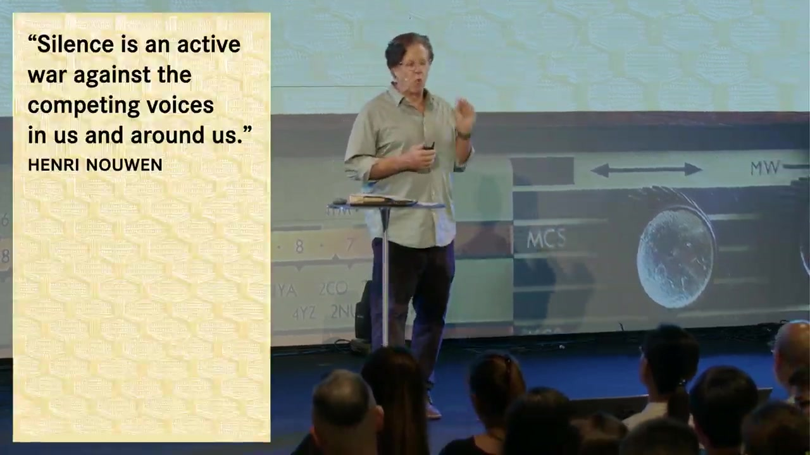
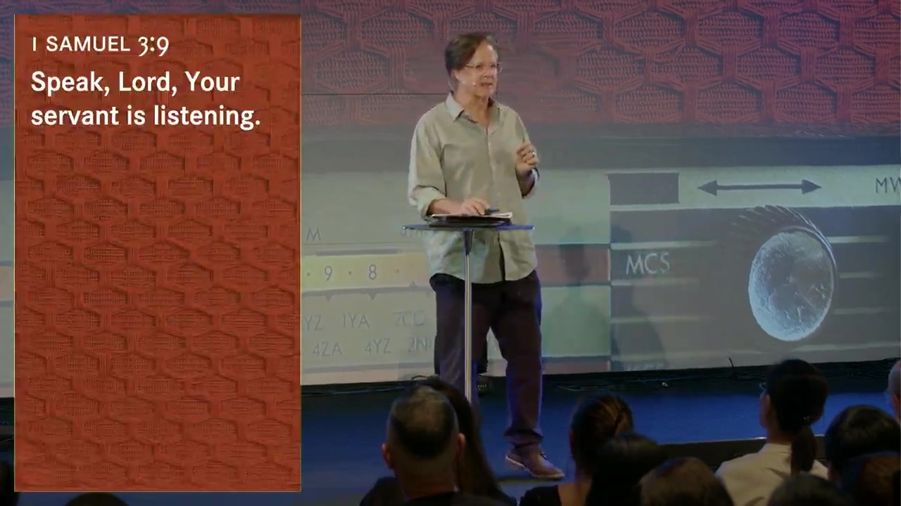

📋 Sermon Overview
Central Theme: Week 2 of Tuning In turns the dial from whether God speaks to how he often speaks — not in wind, earthquake, or fire, but in a gentle whisper amid ordinary life. Pastor Brett invites believers to lean in, cancel the noise, and expect God to speak correction, comfort, clarity, conviction, and calling into character.

📻 Series Roadmap
📖 Key Passages
🌟 Main Takeaways
- God speaks in the ordinary — not only at retreats and mountaintops; the mundane is where the whisper often comes.
- Noise is the enemy of listening — inner anxiety, culture, and even a fly's buzz (John Donne) can drown out God; silence is spiritual warfare (Henri Nouwen).
- Elijah's arc — from fire on Mount Carmel to despair in a cave; God was not in the spectacular display but in the still, small voice.
- Five reliable channels — correction over lies, comfort over fear, clarity over confusion, conviction over sin, calling into character.
- Posture of listening — Samuel's prayer: Speak, Lord, for your servant is listening — expectation, surrender, and sustained attention.
📐 Sermon Structure
📻 Still Tuned In at FM633
Glad you found us here at FM633. You're exactly where you need to be. Thank you for tuning in.
Pastor Brett continued the Tuning In series: we speak to God in prayer — but how is that a conversation, not a monologue? A healthy relationship has give and take. If faith is relationship with God, we should expect ongoing two-way communication beyond Scripture alone — carefully, biblically, and with discernment.
🎧 Noise-Canceling Faith
Brett held up noise-canceling earphones — passive seal plus active microphones that invert surrounding sound waves to create silence so you hear what you choose. His question: What if we could hear God that clearly? Cancel inner turmoil, anxiety, competing demands, markets, politics, notifications — not by technology, but because God desires to speak and we learn to discern.

🔥 Elijah — From Fire to Whisper
In 1 Kings 18, Elijah prays once and fire falls — bold faith, pagan prophets defeated. He expects revival in Jezreel. Instead Jezebel orders his death. Elijah runs, hides, and prays in self-pity: "I alone am left."
In 1 Kings 19, God tells him to stand on the mountain. A great wind shatters rocks — the Lord was not in the wind. An earthquake — not in the earthquake. Fire — not in the fire. (God has used wind, fire, and earthquake before; not this time.)

Elijah teaches that we need not wait for earthquake or fire. Most of life is routine, forgettable days — and that is where God desires to converse with us.
🪰 The Noise of a Fly — & the War on Silence

Donne had no smartphone — how much more distracted are we? Multitasking is applauded; frenetic noise is normal. Are we waiting for something loud while missing the whisper?

Brett admitted he is not a monk — he loves activity and Causeway Bay crowds. Silence is uncomfortable; it is a discipline to sit beyond a minute. Yet silence is where whispers are heard.
🔊 Preview: Five Ways God Speaks
Brett outlined five biblically grounded categories (see the dedicated tab for detail):
- Correction over the lies of the enemy
- Comfort to your fears
- Clarity to your confusion
- Conviction to your sin
- Calling into your character
Stories woven through the message: Monday morning on the beach with his dog Monet and church-budget anxiety; washing dishes at home and God whispering about serving like Jesus when resentment rose toward his adult sons.
👂 Speak, Lord — Your Servant Is Listening
Young Samuel heard a voice he thought was Eli's — three times. Eli finally said: that is God. Tell him: Speak, Lord, for your servant is listening.

The service closed with worship on Touch of Heaven — "All the noise dies down, Lord, speak to me now" — and prayer that our ears would be finely tuned to hear God's voice.
✝️ Scripture in This Sermon
📸 Slides from the service
🔊 Five Ways God Speaks
Five biblically backed categories — areas every believer can lean into and expect to hear the gentle whisper of God.
Correction over lies
Satan is the father of lies — subtle, not always loud. God speaks truth against aberrations in our minds. Paul: demolish arguments, take every thought captive (2 Cor 10). Jesus: the truth will set you free (John 8:32) — macro gospel and micro daily discernment.
Comfort to fears
"Fear not" is Scripture's most repeated command. Fear captures us and robs joy. Brett's Monday budget meetings became fear of opinions — until he remembered God has been faithful 27 years at Island ECC and 2,000+ years to the church. God speaks: Do not let your hearts be troubled.
Clarity to confusion
Peter was inwardly perplexed by his vision (Acts 10). God is kind to clarify — sometimes one step at a time (flashlight in a cave), sometimes full explanation. He is not a God of chaos; walk by faith one obedient step at a time.
Conviction to sin
The Spirit convicts (John 16:8) — a gift, like a loving parent correcting a child. Godly grief leads to repentance (2 Cor 7). Washing dishes, Brett heard: I did not come to be served but to serve — indignation turned to gratitude in five minutes.
Calling into character
God often sets aside our A-or-B choices to work on us. Fruit of the Spirit, humility, patience (Eph 4:2). You never graduate sanctification — his Word is living and active. Pray for patience? God gives opportunities, not instant infusion.
🎯 Tuning In to the Whisper
God invites a personal relationship — two-way conversation. This week's call: lean in, cancel noise, expect the whisper in ordinary moments.
🔇 Practice silence
📡 Competing noise
Notifications, social feeds, inner loops, fear of others' opinions, self-pity like Elijah's "I alone am left."
📻 Gentle whisper
Requires posture — ear turned, expectations set, margin made. Nouwen: silence wars against competing voices.
Before checking scores or news, seek God first — Brett's beach walk with Lectio Divina before any swipe.
Speak, Lord — your servant is listening. Expectation, surrender, sustained attention — not a one-line prayer and done.
When you sense correction, comfort, clarity, conviction, or character-calling — weigh it against Scripture and godly community.
💭 Reflection & Discussion
📝 From the service
- When was the last time you were convinced of hearing God's voice? How did you know it was Him?
- What is the greatest "noise" in your life that limits your hearing from God?
🔍 Going deeper
- Elijah expected revival after fire on Carmel but fled from Jezebel. When have spectacular moments not led to the outcomes you expected — and how did God meet you afterward?
- Which of the five ways (correction, comfort, clarity, conviction, character) do you most resist — and why?
- Donne said a fly's noise distracted him from God. What is your "fly" — the smallest distraction that pulls you off frequency?
- How long can you sit in silence before discomfort rises? What would one extra minute of quiet prayer each day change?
- Pray Samuel's prayer aloud slowly: Speak, Lord, for your servant is listening. What does "your servant" cost you this week?
🙏 Prayer prompts
- Whisper: Lord, I do not need only wind and fire — train my ear for the gentle whisper in ordinary days.
- Noise: Quiet the lies and fears that compete with your voice; I take thoughts captive to Christ.
- Listen: Speak, Lord — I am your servant, and I am listening.
⚡ Challenge for the week
- Once daily, before opening any app or news, pray Samuel's six words and wait sixty seconds in silence. Note anything you sense — then test it against Scripture.